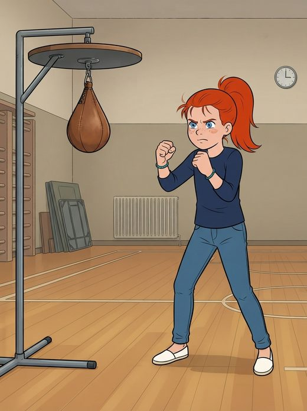

Zoé et le ballon-poire rebelle
En plein hiver, Zoé essaie le ballon-poire au gymnase du centre communautaire avec Nadia, mais l'engin rebondit toujours du mauvais côté et ses bras s'épuisent vite. Au bord d'abandonner, elle doit choisir entre continuer seule à son propre rythme ou demander l'aide de Félix, un garçon doué qui n'a pourtant jamais essayé ce sport. Dans la branche où elle persévère seule, Zoé trouve son propre rythme grâce à ses essais et aux encouragements de Nadia, puis rentre fière raconter sa réussite à Réglisse. Dans la branche où elle demande de l'aide, elle découvre que Félix n'est pas meilleur qu'elle au ballon-poire ; ensemble, ils trouvent la bonne technique et célèbrent leur victoire avec Nadia, avant que Zoé ne rentre partager avec Réglisse la joie d'avoir osé demander de l'aide.